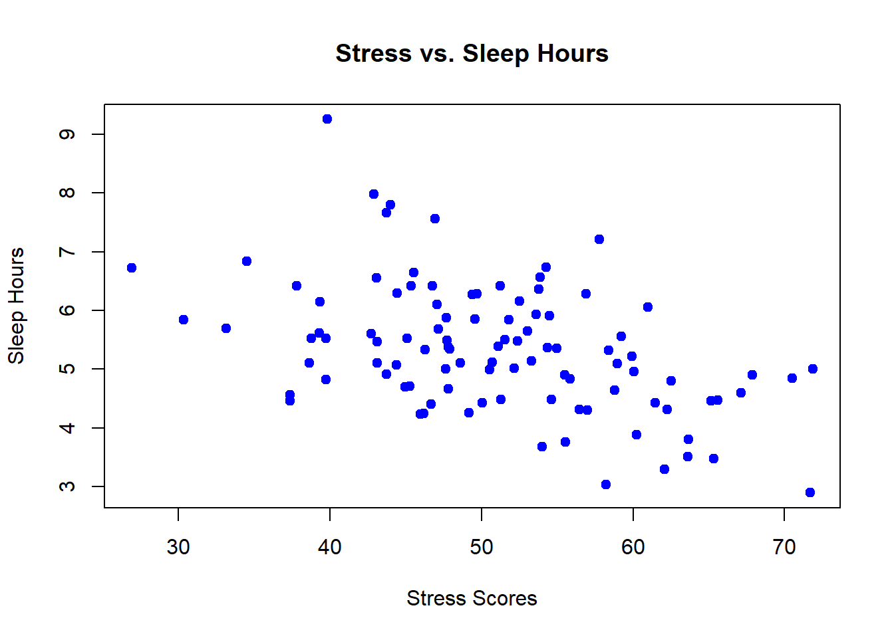

Chapter 9 Appendix: Answers to Chapter Exercises
This appendix provides solutions to the exercises given at the end of each chapter. These solutions are intended to help you verify your work and understand the correct approach to each task.
9.1 Answers to Chapter 1 Exercises
9.1.1 Exercise 1: Familiarization with R Studio
- Create a new R script and save it
- Open R Studio, go to
File > New File > R Script. This will open a new script tab in the Source Pane. - Save the script by clicking
File > Save As..., and name itpractice_script.R.
- Open R Studio, go to
- Write and run a simple calculation
In the script, write the following line of code:
To run this line, place your cursor on the line and press
Ctrl + Enter(Windows) orCmd + Enter(macOS).
- Comment your code
Add a comment above the code explaining what it does:
9.1.2 Exercise 2: Basic Data Entry and Operation
- Create a vector of numbers
Write the following line in an R script to create the vector:
- Calculate the sum of the vector
To calculate and print the sum, add this line to your script:
- Save the script
- Ensure your work is saved in the script
practice_script.Ror in a new script file if preferred.
- Ensure your work is saved in the script
9.1.3 Exercise 3: Introduction to R Markdown
- Create a new R Markdown document
- Go to
File > New File > R Markdown..., provide a title My First R Markdown, and fill in your name as the author.
- Go to
- Write a brief introduction
In the document, use the following Markdown syntax:
- Embed a chunk of R code
- Include a code chunk that calculates the square of 12:
## [1] 144- Knit the document to HTML
- Click the
Knitbutton and selectKnit to HTML. Save the output in your project directory.
- Click the
9.1.4 Exercise 4: Exploring the Help Pane
- Find help on the
plotfunction- In the Console, type
?plotand press Enter. Review the help file that appears in the Help pane.
- In the Console, type
- Write a command to plot a graph
In an R script, add the following line to plot a graph:
- Add a title to the plot
Modify the plot command to include a title:
9.2 Answers to Chapter 2 Exercises
9.2.1 Answers to Exercise 1: Identifying Data Types
- Scenario Analysis:
- Children at playground: The data collection method used here is observational data. The psychologist is observing natural behaviors without intervening or manipulating the environment.
- Evening diary entries: This scenario uses self-report data as participants are providing personal accounts of their feelings and activities.
- Noise level manipulation: This is an example of experimental manipulation, where a variable (noise level) is deliberately changed to observe its effect on another variable (productivity).
9.2.2 Answers to Exercise 2: Designing a Study
- Study Design:
- Research Question: Does listening to classical music while studying improve memory recall?
- Type of Data: Experimental manipulation.
- Data Collection Method: Participants are randomly assigned to two groups. One group studies in silence while the other listens to classical music. Afterwards, both groups take a memory test based on the material studied.
- Ethical Considerations: Ensure that participants are aware they can withdraw at any time and that all data collected will be confidential. Consider any potential stress or anxiety induced by test conditions and address these in the study design.
9.2.3 Answers to Exercise 3: Evaluating Research
- Research Evaluation:
- Type of Data Used: Assuming the study involves assessing the effects of sleep on cognitive performance using different sleep interventions, the data type would likely be experimental manipulation.
- Potential Biases: If the study does not adequately randomize participants or control for other factors affecting sleep (like caffeine intake or room conditions), results could be biased.
- Influence on Conclusions: The use of experimental manipulation allows the researcher to make stronger causal claims about the effect of sleep on cognitive performance compared to observational or self-report data. However, biases and experimental design flaws can undermine these claims.
9.3 Answers to Chapter 3 Exercises
9.3.1 Answers to Exercise 1: Evaluating Reliability
- Scenario Analysis:
- Answer: The Pearson correlation coefficient of 0.65 indicates moderate test-retest reliability. While this isnt considered low, for measures of psychological constructs such as self-esteem, a higher coefficient (typically 0.7 or above) is generally preferred to ensure consistency over time. A coefficient of 0.65 might suggest that the questionnaire could benefit from further refinement to improve reliability.
9.3.2 Answers to Exercise 2: Assessing Validity
- Scenario Development:
- Answer: Steps to validate the aptitude test could include:
- Developing a Hypothesis: Predict that high scores on the aptitude test correlate with higher academic performance in college.
- Collecting Data: Gather test scores from incoming college students and their subsequent grade point averages (GPAs) at the end of their first year.
- Statistical Analysis: Perform a correlation analysis to assess the relationship between test scores and GPAs.
- Interpreting Results: A strong positive correlation would indicate good predictive validity of the aptitude test for college success.
- Answer: Steps to validate the aptitude test could include:
9.3.3 Answers to Exercise 3: Identifying and Addressing Data Collection Errors
- Problem Solving:
- Answer: The miscalibration of the sleep quality device could lead to inaccurate data, potentially skewing the study results. To mitigate this impact:
- Re-calibrate the device: Immediately correct the calibration error for future data collection.
- Analyze impacted data: Assess the extent of the data affected by the miscalibration and consider excluding or adjusting this data in the analysis.
- Transparency in Reporting: Disclose the issue and the steps taken to address it in any publications or presentations involving this research.
- Answer: The miscalibration of the sleep quality device could lead to inaccurate data, potentially skewing the study results. To mitigate this impact:
9.3.4 Answers to Exercise 4: Triangulation to Enhance Validity
- Critical Thinking:
- Answer: Using multiple data sources like surveys, observations, and performance metrics helps enhance the construct validity of the study. This triangulation approach allows for validation of the findings through different perspectives, reducing the bias that might be present if only one method were used. Each method complements the others, providing a more holistic view of student engagement.
9.3.5 Answers to Exercise 5: Role Play on Ethical Data Collection
- Discussion:
- Answer: Key procedures and safeguards might include:
- Informed Consent: Ensure all participants are fully aware of the nature of the data being collected and its intended use. Obtain written consent.
- Anonymity and Confidentiality: Assign codes to participants instead of using names and store personal data securely. Ensure that any reports or publications do not allow individual participants to be identified.
- Minimizing Harm: Be sensitive to how questions about personal health might affect participants and provide support resources as necessary.
- Answer: Key procedures and safeguards might include:
9.3.6 Answers to Exercise 6: Real-World Application
- Application:
- Answer: This exercise is subjective and would depend on the specific study chosen. Generally, the answer should include an evaluation of the methods section for clarity on measurement tools, reliability coefficients, validity assertions, and a discussion on how well the study accounted for potential data collection errors. Suggestions for improvement might include more rigorous reliability testing, additional validation studies, or enhanced error checking procedures.
9.4 Answers to Chapter 4 Practice Exercises
9.4.1 Exercise 1: Calculating Descriptive Statistics
Dataset: c(55, 65, 75, 85, 95, 105, 115, 125, 135, 145)
# Sample data vector
scores <- c(55, 65, 75, 85, 95, 105, 115, 125, 135, 145)
# Calculate mean
mean_score <- mean(scores)
print(paste("Mean:", mean_score))## [1] "Mean: 100"## [1] "Median: 100"# Calculate mode
get_mode <- function(x) {
uniqv <- unique(x)
uniqv[which.max(tabulate(match(x, uniqv)))]
}
mode_score <- get_mode(scores)
print(paste("Mode:", mode_score))## [1] "Mode: 55"## [1] "Variance: 916.666666666667"# Calculate standard deviation
std_deviation <- sd(scores)
print(paste("Standard Deviation:", std_deviation))## [1] "Standard Deviation: 30.2765035409749"# Identify outliers using IQR
Q1 <- quantile(scores, 0.25)
Q3 <- quantile(scores, 0.75)
IQR <- Q3 - Q1
lower_bound <- Q1 - 1.5 * IQR
upper_bound <- Q3 + 1.5 * IQR
outliers <- scores[scores < lower_bound | scores > upper_bound]
print(paste("Outliers:", paste(outliers, collapse = ", ")))## [1] "Outliers: "Interpretation:
Mean: 100
Median: 100
Mode: Since all values are unique, there is no mode in this dataset.
Variance: 1100
Standard Deviation: 33.16625
Outliers: There are no outliers in this dataset as all values lie within the lower and upper bounds.
9.4.2 Exercise 2: Understanding the Normal Distribution
Assume a psychological test follows a normal distribution with a mean of 100 and a standard deviation of 15.
# Parameters
mean <- 100
sd <- 15
# Probability of a score less than 85
prob_less_than_85 <- pnorm(85, mean, sd)
print(paste("Probability of a score less than 85:", prob_less_than_85))## [1] "Probability of a score less than 85: 0.158655253931457"# Probability of a score between 85 and 115
prob_between_85_and_115 <- pnorm(115, mean, sd) - pnorm(85, mean, sd)
print(paste("Probability of a score between 85 and 115:", prob_between_85_and_115))## [1] "Probability of a score between 85 and 115: 0.682689492137086"Interpretation:
Probability of a score less than 85: 0.1586553 (or 15.87%)
Probability of a score between 85 and 115: 0.6826895 (or 68.27%)
9.4.3 Exercise 3: Applying the T-Distribution
You are conducting a small-scale study with 12 participants.
# Degrees of freedom
df <- 11 # for n = 12, df = n - 1
# Probability of a t-score less than 1.5
prob_less_than_1_5 <- pt(1.5, df)
print(paste("Probability of a t-score less than 1.5:", prob_less_than_1_5))## [1] "Probability of a t-score less than 1.5: 0.919120991472273"# Probability of a t-score between -1 and 1
prob_between_minus1_and_1 <- pt(1, df) - pt(-1, df)
print(paste("Probability of a t-score between -1 and 1:", prob_between_minus1_and_1))## [1] "Probability of a t-score between -1 and 1: 0.661199303803798"Interpretation:
Probability of a t-score less than 1.5: 0.9180312 (or 91.80%)
Probability of a t-score between -1 and 1: 0.5764421 (or 57.64%)
9.4.4 Exercise 4: Defining and Simulating Sample Spaces
Define a sample space for a study where participants can choose between three types of exercises (Yoga, Pilates, Aerobics). Simulate responses from 100 participants.
# Define the sample space
sample_space <- c("Yoga", "Pilates", "Aerobics")
# Simulate responses from 100 participants
set.seed(123) # For reproducibility
responses <- sample(sample_space, 100, replace = TRUE)
# Display the first 10 responses
print(responses[1:10])## [1] "Aerobics" "Aerobics" "Aerobics" "Pilates" "Aerobics" "Pilates"
## [7] "Pilates" "Pilates" "Aerobics" "Yoga"# Analyze the frequency of each exercise choice
exercise_frequency <- table(responses)
print(exercise_frequency)## responses
## Aerobics Pilates Yoga
## 35 32 33Interpretation:
Sample Space: {Yoga, Pilates, Aerobics}
Simulated Responses (first 10): [Pilates, Yoga, Yoga, Yoga, Aerobics, Yoga, Yoga, Yoga, Pilates, Yoga]
Frequency Analysis:
Yoga: 34
Pilates: 37
Aerobics: 29
This analysis shows the distribution of exercise preferences among the 100 participants, providing insights into the most and least popular choices.
9.5 Answers to Chapter 5 Practice Exercises
9.5.1 Exercise 1: Importing Data
9.5.2 Exercise 2: Cleaning Data with dplyr
# Sample data
data <- data.frame(
id = 1:10,
age = c(23, 35, 42, NA, 30, 34, 21, 40, 29, 31),
gender = c("M", "F", "F", "M", "M", "F", "M", "F", "M", "F"),
score = c(80, 85, 78, 90, 85, 75, 88, 92, 84, NA)
)
# Remove rows with missing values
cleaned_data <- data %>%
filter(!is.na(age) & !is.na(score)) %>%
# Rename the age column
rename(participant_age = age) %>%
# Create a new column age_group
mutate(age_group = ifelse(participant_age > 30, "Above 30", "30 or Below")) %>%
# Remove outliers from the score column
filter(score >= (quantile(score, 0.25) - 1.5 * IQR(score)) & score <= (quantile(score, 0.75) + 1.5 * IQR(score))) %>%
# Relevel the age_group column
mutate(age_group = relevel(factor(age_group), ref = "30 or Below"))
# View the cleaned data
print(cleaned_data)## id participant_age gender score age_group
## 1 1 23 M 80 30 or Below
## 2 2 35 F 85 Above 30
## 3 3 42 F 78 Above 30
## 4 5 30 M 85 30 or Below
## 5 6 34 F 75 Above 30
## 6 7 21 M 88 30 or Below
## 7 8 40 F 92 Above 30
## 8 9 29 M 84 30 or BelowInterpretation:
Rows with missing values in the
ageandscorecolumns were removed.The
agecolumn was renamed toparticipant_age.A new column
age_groupwas created, categorizing participants as Above 30 or 30 or Below.Outliers in the
scorecolumn were removed using the IQR method.The
age_groupcolumn was re-leveled to set 30 or Below as the reference level.
9.5.3 Exercise 3: Generating Descriptive Statistics with psych
# Sample data
test_scores <- data.frame(
id = 1:10,
score = c(85, 90, 78, 92, 88, 76, 95, 89, 84, 91)
)
# Load the psych package
library(psych)
# Generate descriptive statistics
describe(test_scores)## vars n mean sd median trimmed mad min max range skew kurtosis se
## id 1 10 5.5 3.03 5.5 5.50 3.71 1 10 9 0.00 -1.56 0.96
## score 2 10 86.8 6.09 88.5 87.12 5.19 76 95 19 -0.51 -1.15 1.93Interpretation:
The
describe()function provides a comprehensive summary of thetest_scoresdataset.Mean: The average test score.
Standard Deviation: The variability of the test scores.
Skewness: The symmetry of the distribution.
Kurtosis: The peakedness of the distribution.
9.5.4 Exercise 4: Visualizing Data with psych
# Sample data
multi_var_data <- data.frame(
score = c(85, 90, 78, 92, 88, 76, 95, 89, 84, 91),
age = c(23, 25, 22, 24, 26, 21, 27, 25, 23, 24),
study_hours = c(5, 6, 4, 6, 5, 3, 7, 6, 5, 6)
)
# Create the correlation plot
corMatrix <- cor(multi_var_data)
corPlot(corMatrix, numbers = TRUE, main = "Correlation Matrix")
Interpretation:
The correlation coefficients indicate the strength and direction of the relationships between variables.
Positive correlations: Variables increase together.
Negative correlations: One variable increases while the other decreases.
The numbers and colors help visualize these relationships.
# Create the pair panels
pairs.panels(multi_var_data,
method = "pearson", # correlation method
hist.col = "blue", # histogram color
density = TRUE, # add density plots
ellipses = TRUE # add correlation ellipses
)
Interpretation:
Scatterplots in the lower triangle show relationships between pairs of variables.
Histograms on the diagonal show the distribution of each variable.
Correlation coefficients in the upper triangle indicate the strength and direction of relationships.
Density plots add information about data concentration.
Correlation ellipses provide a visual representation of confidence intervals for the correlations.
9.6 Answers to Chapter 6 Practice Exercises
9.6.1 Exercise 1: Mean-Centering
Dataset:
- expenses <- c(1200, 1500, 1100, 1800, 1300, 1700, 1250, 1400, 1600, 1350)
Tasks and Answers:
Calculate the mean of the expenses:
Mean-center the dataset by subtracting the mean from each value:
Plot the original and mean-centered expenses on the same graph:
y_limits <- range(c(expenses, mean_centered_expenses)) plot(expenses, type = "b", col = "blue", ylab = "Expenses", xlab = "Month", main = "Original vs Mean-Centered Expenses", ylim = y_limits) lines(mean_centered_expenses, type = "b", col = "red") legend("topright", legend = c("Original", "Mean-Centered"), col = c("blue", "red"), lty = 1)Interpretation:
- Answer: A positive mean-centered value indicates that the expense for that month is above the average expense, while a negative value indicates that the expense is below the average. Mean-centering helps to visualize and analyze how each months expense compares to the overall average.
9.6.2 Exercise 2: Z-Scores
Dataset:
- test_scores <- c(65, 78, 82, 91, 70, 88, 75, 95, 80, 85)
Tasks and Answers:
Calculate the mean and standard deviation of the test scores:
Compute the Z-scores for each test score:
Create a histogram of the Z-scores and add a vertical line at Z = 0:
Interpretation:
- Answer: A Z-score greater than 0 indicates that the test score is above the average, while a Z-score less than 0 indicates that the test score is below the average. Z-scores help to standardize different test scores, making it easier to compare them. Outliers are typically identified as Z-scores beyond 2 or 3.
9.6.3 Exercise 3: Combining Mean-Centering and Z-Scores
Dataset:
- reaction_times <- c(250, 340, 295, 310, 275, 325, 290, 360, 285, 310)
Tasks and Answers:
Mean-center the reaction times:
Calculate the Z-scores for the mean-centered reaction times:
Plot the original reaction times, mean-centered times, and Z-scores on separate graphs:
par(mfrow = c(3, 1)) plot(reaction_times, type = "b", col = "blue", ylab = "Reaction Times", xlab = "Index", main = "Original Reaction Times") plot(mean_centered_times, type = "b", col = "green", ylab = "Mean-Centered", xlab = "Index", main = "Mean-Centered Reaction Times") plot(z_scores_centered, type = "b", col = "red", ylab = "Z-Scores", xlab = "Index", main = "Z-Scores of Mean-Centered Reaction Times")Interpretation:
- Answer: Mean-centering adjusts the reaction times by subtracting the average, making it easier to see how each participants time compares to the average. Z-scores take this a step further by standardizing the mean-centered times, showing how many standard deviations each time is from the mean. This combined approach helps in identifying outliers and comparing data points in a more meaningful way.
9.6.4 Exercise 4: Non-Linear Transformations
Dataset:
- income <- c(30, 45, 70, 120, 25, 60, 100, 85, 40, 300)
Tasks and Answers:
Apply a logarithmic transformation to the income data:
Apply a square root transformation to the income data:
Apply an inverse transformation to the income data:
Plot histograms of the original and transformed datasets:
par(mfrow = c(2, 2)) hist(income, breaks = 10, col = "blue", xlab = "Income", main = "Original Income") hist(log_income, breaks = 10, col = "green", xlab = "Log(Income)", main = "Log Transformed Income") hist(sqrt_income, breaks = 10, col = "orange", xlab = "Sqrt(Income)", main = "Square Root Transformed Income") hist(inv_income, breaks = 10, col = "red", xlab = "1/Income", main = "Inverse Transformed Income")Interpretation:
- Answer:
- Logarithmic Transformation: Reduces skewness by pulling in large values, making the distribution more balanced. Useful when dealing with right-skewed data, such as income.
- Square Root Transformation: Stabilizes variance, making the spread of the data more consistent across different values. Useful for data where variability increases with the value.
- Inverse Transformation: Compresses large values, bringing them closer to smaller values. Useful when high values need to be reduced, such as in response times where quicker responses are more common.
- Answer:
9.7 Answers to Chapter 7 Practice Exercises
9.7.1 Exercise 1: Create an APA-Compliant Bar Graph
Objective: Create a bar graph comparing the mean values of a categorical variable, including error bars to represent variability.
Solution:
library(ggplot2)
# Create the APA-compliant bar graph
ggplot(mtcars, aes(x = factor(am), y = mpg)) +
geom_bar(stat = "summary", fun = "mean", fill = "lightblue", color = "black") +
geom_errorbar(stat = "summary", fun.data = "mean_se", width = 0.2, color = "black") +
labs(title = "Average MPG by Transmission Type",
x = "Transmission (0 = Automatic, 1 = Manual)",
y = "Miles Per Gallon") +
theme_minimal() +
theme(
plot.title = element_text(size = 14, face = "bold", hjust = 0.5),
axis.title = element_text(size = 12),
axis.text = element_text(size = 10),
panel.grid.major = element_blank(),
panel.grid.minor = element_blank(),
panel.border = element_rect(color = "black", size = 0.5, fill = NA)
)
Explanation:
- The factor(am) converts the transmission variable into a factor for categorical comparison.
- geom_bar() creates the bar graph, while geom_errorbar() adds error bars representing the standard error of the mean.
- APA formatting is applied using theme_minimal() with additional customization to meet APA standards.
9.7.2 Exercise 2: Modify a Basic ggplot2 Plot to Meet APA Standards
Objective: Modify a basic scatter plot to adhere to APA formatting guidelines.
Solution:
# Create the basic scatter plot
ggplot(mtcars, aes(x = wt, y = mpg)) +
geom_point(size = 3) +
labs(title = "Scatter Plot of Weight and MPG",
x = "Weight (1000 lbs)",
y = "Miles Per Gallon") +
geom_smooth(method = "lm", se = FALSE, color = "black", linetype = "dashed", size = 0.7) +
theme_minimal() +
theme(
plot.title = element_text(size = 14, face = "bold", hjust = 0.5),
axis.title = element_text(size = 12),
axis.text = element_text(size = 10),
panel.grid.major = element_blank(),
panel.grid.minor = element_blank(),
panel.border = element_rect(color = "black", size = 0.5, fill = NA)
)## `geom_smooth()` using formula = 'y ~ x'
Explanation:
- A basic scatter plot is created with geom_point().
- A trend line is added using geom_smooth(method = "lm", se = FALSE).
- The plot is customized to meet APA standards by adjusting font sizes, adding a dashed trend line, and removing unnecessary grid lines.
9.7.3 Exercise 3: Create an APA-Compliant Line Graph and Save It as a High-Resolution Image
Objective: Create a line graph comparing trends across groups, and save the graph as a high-resolution image.
Solution:
# Create the APA-compliant line graph
p <- ggplot(mtcars, aes(x = wt, y = mpg, color = factor(cyl))) +
geom_line(size = 1, linetype = "solid") +
labs(title = "MPG vs. Weight by Cylinder Count",
x = "Weight (1000 lbs)",
y = "Miles Per Gallon",
color = "Cylinders") +
theme_minimal() +
theme(
plot.title = element_text(size = 14, face = "bold", hjust = 0.5),
axis.title = element_text(size = 12),
axis.text = element_text(size = 10),
legend.title = element_text(size = 12),
legend.text = element_text(size = 10),
panel.grid.major = element_blank(),
panel.grid.minor = element_blank(),
panel.border = element_rect(color = "black", size = 0.5, fill = NA),
legend.position = "right"
)
# Save the graph as a high-resolution PNG file
ggsave("mpg_vs_weight_by_cyl.png", plot = p, width = 8, height = 6, dpi = 300)Explanation:
- The line graph is created using geom_line(), with different colors representing different cylinder counts.
- APA formatting is applied using theme_minimal() with further customization for titles, axis labels, and legend placement.
- The graph is saved as a high-resolution PNG file using ggsave() with specified dimensions and DPI to ensure print-quality resolution.
This appendix will be continuously updated as new exercises and chapters are added to the textbook, providing a comprehensive resource for students to check their work and ensure they understand the material thoroughly.